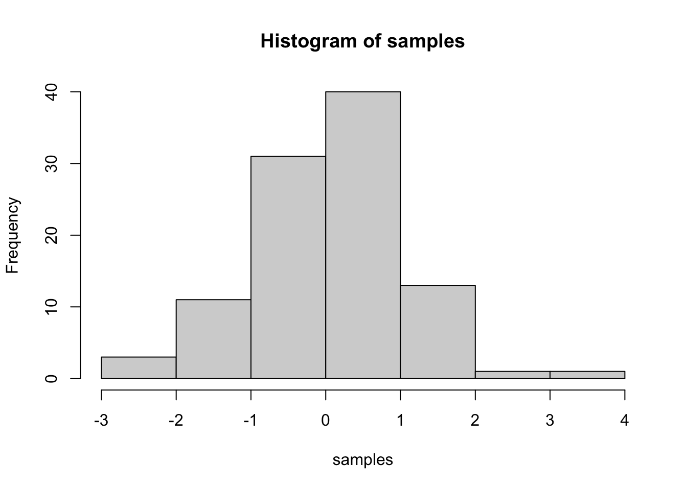
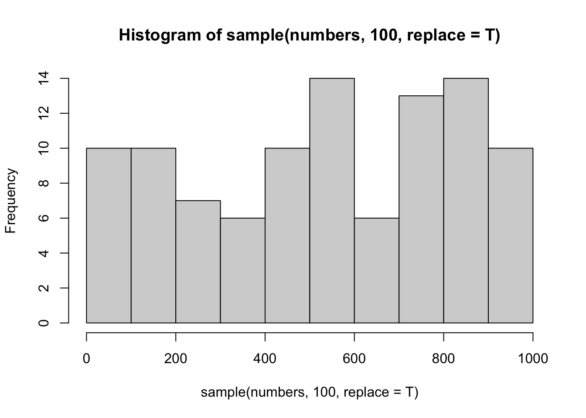
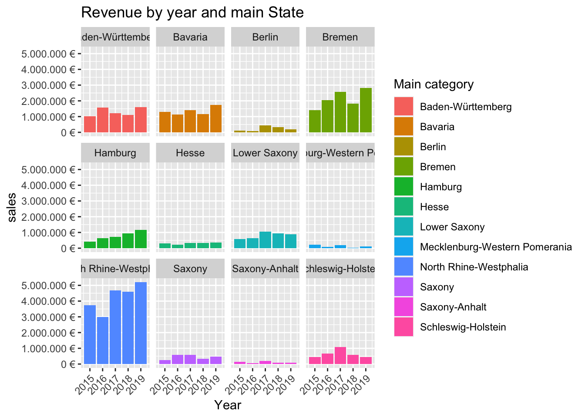
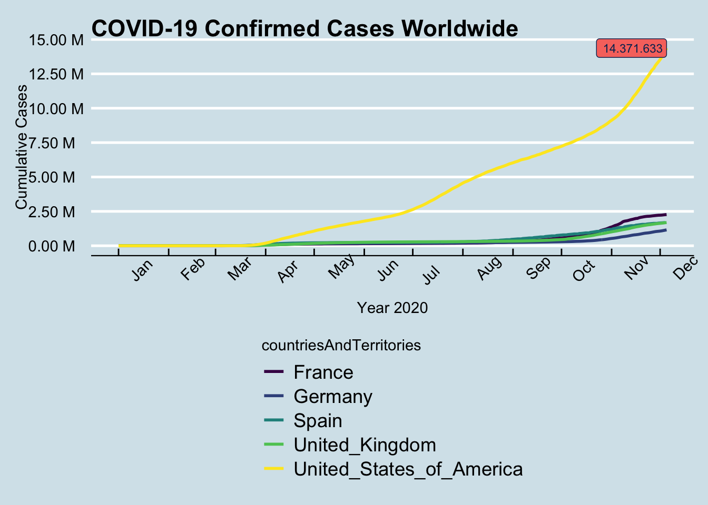
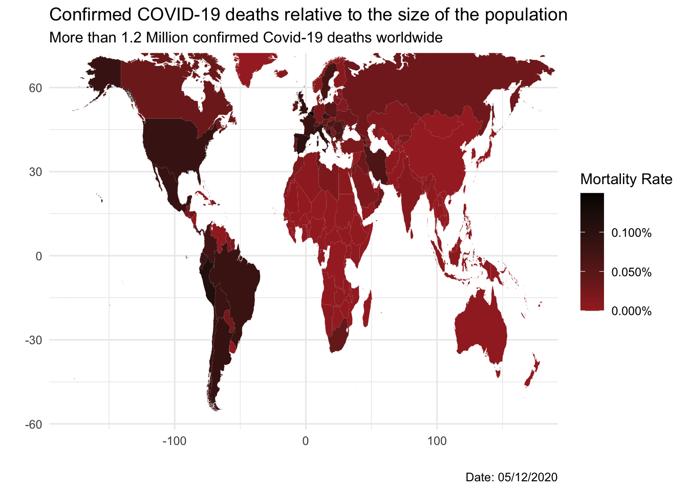

IMPORTANT: You can delete everything in here and start fresh. You might want to start by not deleting anything above this line until you know what that stuff is doing.
This is an .Rmd file. It is plain text with special features. Any time you write just like this, it will be compiled to normal text in the website. If you put a # in front of your text, it will create a top level-header.
Last compiled: 2020-12-05
Notice that whatever you define as a top level header, automatically gets put into the table of contents bar on the left.
You can add more headers by adding more hashtags. These won’t be put into the table of contents
Here’s an even lower level header
Last compiled: 2020-12-05
I’m writing this tutorial going from the top down. And, this is how it will be printed. So, notice the second post is second in the list. If you want your most recent post to be at the top, then make a new post starting at the top. If you want the oldest first, do, then keep adding to the bottom
So far this is just a blog where you can write in plain text and serve your writing to a webpage. One of the main purposes of this lab journal is to record your progress learning R. The reason I am asking you to use this process is because you can both make a website, and a lab journal, and learn R all in R-studio. This makes everything really convenient and in the same place.
So, let’s say you are learning how to make a histogram in R. For example, maybe you want to sample 100 numbers from a normal distribution with mean = 0, and standard deviation = 1, and then you want to plot a histogram. You can do this right here by using an r code block, like this:
samples <- rnorm(100, mean=0, sd=1)
hist(samples)
When you knit this R Markdown document, you will see that the histogram is printed to the page, along with the R code. This document can be set up to hide the R code in the webpage, just delete the comment (hashtag) from the cold folding option in the yaml header up top. For purposes of letting yourself see the code, and me see the code, best to keep it the way that it is. You’ll learn that all of these things and more can be customized in each R code block.
numbers <- 1:1000
# This will print the first 10 elements of the vector numbers
numbers[1:10]## [1] 1 2 3 4 5 6 7 8 9 10# This will plot a histogram of 100 random elements of the vector numbers
hist(sample(numbers, 100, replace = T))
The goal is to analyze the sales of bikes through stores in Germany. Data is organized as “sales by location” and “sales by year and location”.
Bike sales data divided into multiple data sets. Entity-relationship diagrams describe and define the data models. They explain the logical structure of the database.
The first step is to import the necessary libraries
library(tidyverse)
library(readxl)
library(lubridate)We then read all of the Excel files
bikes_tbl <- read_excel(path = "DS_101/00_data/01_bike_sales/01_raw_data/bikes.xlsx")
orderlines_tbl <- read_excel(path = "DS_101/00_data/01_bike_sales/01_raw_data/orderlines.xlsx")
bikeshops <- read_excel(path = "DS_101/00_data/01_bike_sales/01_raw_data/bikeshops.xlsx")The next step is to combine all of the tables into one concise table
bike_orderlines_joined_tbl <- left_join(orderlines_tbl, bikes_tbl, by = c("product.id"="bike.id")) %>% left_join(bikeshops, by = c("customer.id" = "bikeshop.id"))
glimpse(bike_orderlines_joined_tbl)## Rows: 15,644
## Columns: 19
## $ ...1 <chr> "1", "2", "3", "4", "5", "6", "7", "8", "9", "10", "11…
## $ order.id <dbl> 1, 1, 2, 2, 3, 3, 3, 3, 3, 4, 5, 5, 5, 5, 6, 6, 6, 6, …
## $ order.line <dbl> 1, 2, 1, 2, 1, 2, 3, 4, 5, 1, 1, 2, 3, 4, 1, 2, 3, 4, …
## $ order.date <dttm> 2015-01-07, 2015-01-07, 2015-01-10, 2015-01-10, 2015-…
## $ customer.id <dbl> 2, 2, 10, 10, 6, 6, 6, 6, 6, 22, 8, 8, 8, 8, 16, 16, 1…
## $ product.id <dbl> 2681, 2411, 2629, 2137, 2367, 1973, 2422, 2655, 2247, …
## $ quantity <dbl> 1, 1, 1, 1, 1, 1, 1, 1, 1, 1, 1, 2, 1, 1, 1, 1, 1, 1, …
## $ model <chr> "Spectral CF 7 WMN", "Ultimate CF SLX Disc 8.0 ETAP", …
## $ model.year <dbl> 2021, 2020, 2021, 2019, 2020, 2020, 2020, 2021, 2020, …
## $ frame.material <chr> "carbon", "carbon", "carbon", "carbon", "aluminium", "…
## $ weight <dbl> 13.80, 7.44, 14.06, 8.80, 11.50, 8.80, 8.20, 8.85, 14.…
## $ price <dbl> 3119, 5359, 2729, 1749, 1219, 1359, 2529, 1559, 3899, …
## $ category <chr> "Mountain - Trail - Spectral", "Road - Race - Ultimate…
## $ gender <chr> "female", "unisex", "unisex", "unisex", "unisex", "uni…
## $ url <chr> "https://www.canyon.com/en-de/mountain-bikes/trail-bik…
## $ name <chr> "AlexandeRad", "AlexandeRad", "WITT-RAD", "WITT-RAD", …
## $ location <chr> "Hamburg, Hamburg", "Hamburg, Hamburg", "Bremen, Breme…
## $ lat <dbl> 53.57532, 53.57532, 53.07379, 53.07379, 48.78234, 48.7…
## $ lng <dbl> 10.015340, 10.015340, 8.826754, 8.826754, 9.180819, 9.…We now organize the data in the table to give us better insights
bike_orderlines_wrangled_tbl <- bike_orderlines_joined_tbl %>%
separate(col = category,
into = c("category.1","category.2","category.3"),
sep = " - ") %>%
mutate(total.price = price*quantity) %>%
select(-...1, -gender) %>%
select(-ends_with(".id")) %>%
bind_cols(bike_orderlines_joined_tbl %>% select(order.id)) %>%
select(order.id, contains("order"), contains("model"), contains("category"), price, quantity, total.price, everything()) %>%
rename(bikeshop = name) %>%
set_names(names(.) %>% str_replace_all("\\.","_"))
glimpse(bike_orderlines_wrangled_tbl)## Rows: 15,644
## Columns: 18
## $ order_id <dbl> 1, 1, 2, 2, 3, 3, 3, 3, 3, 4, 5, 5, 5, 5, 6, 6, 6, 6, …
## $ order_line <dbl> 1, 2, 1, 2, 1, 2, 3, 4, 5, 1, 1, 2, 3, 4, 1, 2, 3, 4, …
## $ order_date <dttm> 2015-01-07, 2015-01-07, 2015-01-10, 2015-01-10, 2015-…
## $ model <chr> "Spectral CF 7 WMN", "Ultimate CF SLX Disc 8.0 ETAP", …
## $ model_year <dbl> 2021, 2020, 2021, 2019, 2020, 2020, 2020, 2021, 2020, …
## $ category_1 <chr> "Mountain", "Road", "Mountain", "Road", "Mountain", "H…
## $ category_2 <chr> "Trail", "Race", "Trail", "Triathlon Bike", "Dirt Jump…
## $ category_3 <chr> "Spectral", "Ultimate", "Neuron", "Speedmax", "Stitche…
## $ price <dbl> 3119, 5359, 2729, 1749, 1219, 1359, 2529, 1559, 3899, …
## $ quantity <dbl> 1, 1, 1, 1, 1, 1, 1, 1, 1, 1, 1, 2, 1, 1, 1, 1, 1, 1, …
## $ total_price <dbl> 3119, 5359, 2729, 1749, 1219, 1359, 2529, 1559, 3899, …
## $ frame_material <chr> "carbon", "carbon", "carbon", "carbon", "aluminium", "…
## $ weight <dbl> 13.80, 7.44, 14.06, 8.80, 11.50, 8.80, 8.20, 8.85, 14.…
## $ url <chr> "https://www.canyon.com/en-de/mountain-bikes/trail-bik…
## $ bikeshop <chr> "AlexandeRad", "AlexandeRad", "WITT-RAD", "WITT-RAD", …
## $ location <chr> "Hamburg, Hamburg", "Hamburg, Hamburg", "Bremen, Breme…
## $ lat <dbl> 53.57532, 53.57532, 53.07379, 53.07379, 48.78234, 48.7…
## $ lng <dbl> 10.015340, 10.015340, 8.826754, 8.826754, 9.180819, 9.…Now we have to separate the location column into city and State
bike_orderlines_wrangled_tbl <- bike_orderlines_wrangled_tbl %>% separate(col = location,
into = c("City", "State"),
sep = ", ")Now we analyze the above table based on sales per State
sales_by_state_tbl <- bike_orderlines_wrangled_tbl %>%
select(State, total_price) %>%
group_by(State) %>%
summarise(sales = sum(total_price)) %>%
mutate(sales_text = scales::dollar(sales, big.mark = ".",
decimal.mark = ",",
prefix = "",
suffix = " €"))
sales_by_state_tbl## # A tibble: 12 x 3
## State sales sales_text
## <chr> <dbl> <chr>
## 1 Baden-Württemberg 6521090 6.521.090 €
## 2 Bavaria 6742819 6.742.819 €
## 3 Berlin 1128433 1.128.433 €
## 4 Bremen 10653499 10.653.499 €
## 5 Hamburg 3874756 3.874.756 €
## 6 Hesse 1558901 1.558.901 €
## 7 Lower Saxony 4107115 4.107.115 €
## 8 Mecklenburg-Western Pomerania 618974 618.974 €
## 9 North Rhine-Westphalia 21200613 21.200.613 €
## 10 Saxony 2230245 2.230.245 €
## 11 Saxony-Anhalt 569614 569.614 €
## 12 Schleswig-Holstein 3224749 3.224.749 €We now plot the data from the table to better visualize it
sales_by_state_tbl %>%
ggplot(aes(x = State, y = sales)) +
geom_col(fill = "#2DC6D6") +
geom_smooth(method = "lm", se = FALSE) +
scale_y_continuous(labels = scales::dollar_format(big.mark = ".",
decimal.mark = ",",
prefix = "",
suffix = " €")) +
labs(title = "Revenue per State",
subtitle = "Upward Trend",
x = "",
y = "Revenue") +
theme(axis.text.x = element_text(angle=45, hjust = 1))
From the plot above, it is clear that the State where the revenue was bigger is North Rhine-Westphalia.
We now move on to analyze the sales by location and year. We first create a new table containing only the important information. This new table should contain the year, revenue, and location.
sales_by_location_year_tbl <- bike_orderlines_wrangled_tbl %>%
select(order_date, State, total_price) %>%
mutate(Year = year(order_date)) %>%
group_by(State, Year) %>%
summarise(sales = sum(total_price)) %>%
ungroup() %>%
mutate(sales_text = scales::dollar(sales, big.mark = ".",
decimal.mark = ",",
prefix = "",
suffix = " €"))
glimpse(sales_by_location_year_tbl)## Rows: 60
## Columns: 4
## $ State <chr> "Baden-Württemberg", "Baden-Württemberg", "Baden-Württembe…
## $ Year <dbl> 2015, 2016, 2017, 2018, 2019, 2015, 2016, 2017, 2018, 2019…
## $ sales <dbl> 1031924, 1561658, 1224152, 1114327, 1589029, 1301461, 1129…
## $ sales_text <chr> "1.031.924 €", "1.561.658 €", "1.224.152 €", "1.114.327 €"…We finally analyze the data with the help of column plots. There are 12 states with bike stores, meaning 12 plots.
sales_by_location_year_tbl %>%
ggplot(aes(x = Year, y = sales, fill = State)) +
geom_col() +
facet_wrap(~ State) +
scale_y_continuous(labels = scales::dollar_format(big.mark = ".",
decimal.mark = ",",
prefix = "",
suffix = " €")) +
labs(title = "Revenue by year and main State",
fill = "Main category") +
theme(axis.text.x = element_text(angle=45, hjust = 1))We need to get data via an API. For this example, I will be fetching data from a Brazilian API that provides information about car prices sold in Brazil
# import the httr library
library(httr)
# request access the the Brazilian car API
response <- GET("https://parallelum.com.br/fipe/api/v1/carros/marcas/39/modelos") %>%
# Go the the folder containing the Mercedes-Benz models
content(as = "text") %>% fromJSON() %>% .$modelos %>% as.tibble() %>% select(nome) %>% rename("Mercedes Model" = nome)
print(response, n = 10)## # A tibble: 445 x 1
## `Mercedes Model`
## <chr>
## 1 180-D Pick-Up/Furgão 2.4 Diesel
## 2 180-D Van 2.4 Diesel
## 3 190-E 2.3
## 4 230-E 2.3
## 5 260-E 2.6
## 6 300-D 3.0 Diesel
## 7 300-E 3.0
## 8 300-SE 3.0/3.2
## 9 300-SL 3.0
## 10 300-TE Wagon 3.0
## # … with 435 more rowsWe now scrape the website of one of the competitors of Canyon Rose Bikes. We create a small database that contains the model names, and the prices for at least one category.
Let’s first import all of the necessary libraries
library(tidyverse) # Main Package - Loads dplyr, purrr, etc.
library(rvest) # HTML Hacking & Web Scraping
library(xopen) # Quickly opening URLs
library(jsonlite) # converts JSON files to R objects
library(glue) # concatenate strings
library(stringi) # character string/text processingNow we read the html code from the website
# provide the home URL and read it
url_home <- "https://www.rosebikes.de/"
html_home <- read_html(url_home)we then scrape the models of the bikes
# Create a new table with the categories
rose_bike_category <- html_home %>%
# Go to the node where the category names are located
html_nodes(css = ".header-mobile-menu-item__title") %>% html_text() %>%
# Extract the unecessary symbols
str_extract(pattern = "(?<=\\n).*(?=\\n)") %>%
# slice the rows that don't have a category
as.tibble() %>% slice(3:11) %>%
# Create a new column for the specific category URLs
mutate(model_url = str_glue("{url_home}fahrräder/{value}"))
rose_bike_category## # A tibble: 9 x 2
## value model_url
## <chr> <glue>
## 1 MTB https://www.rosebikes.de/fahrräder/MTB
## 2 Rennrad https://www.rosebikes.de/fahrräder/Rennrad
## 3 Gravel https://www.rosebikes.de/fahrräder/Gravel
## 4 Cyclocross https://www.rosebikes.de/fahrräder/Cyclocross
## 5 Fitness https://www.rosebikes.de/fahrräder/Fitness
## 6 E-Bike https://www.rosebikes.de/fahrräder/E-Bike
## 7 Trekking https://www.rosebikes.de/fahrräder/Trekking
## 8 Reise https://www.rosebikes.de/fahrräder/Reise
## 9 Urban https://www.rosebikes.de/fahrräder/UrbanThe next step is to scrape the models of the first category “MTB”
# Create a new table with the products of the MTB category
# We use the URL from the first row of the previous table
rose_bike_models <- rose_bike_category$model_url[1] %>%
read_html() %>%
# Go to the node that contains the product name
html_nodes(css = ".catalog-category-bikes__title-text") %>% html_text() %>%
# Extract the unecessary characters
str_extract(pattern = "(?<=\\n).*(?=\\n)") %>%
as.tibble() %>%
rename("MTB Models" = value)
# Create a new column with an ID for future merging
rose_bike_models$ID <- seq.int(nrow(rose_bike_models))
rose_bike_models <- select(rose_bike_models, ID, "MTB Models")
rose_bike_models## # A tibble: 9 x 2
## ID `MTB Models`
## <int> <chr>
## 1 1 GROUND CONTROL
## 2 2 ROOT MILLER
## 3 3 PIKES PEAK
## 4 4 THE BRUCE
## 5 5 COUNT SOLO
## 6 6 PSYCHO PATH
## 7 7 THRILL HILL
## 8 8 THRILL HILL TRAIL
## 9 9 SOUL FIREWe now get a table with the prices of each MTB model
# We create a new table with the prices of the individual MTB bikes
rose_bike_MTB_price <- rose_bike_category$model_url[1] %>%
read_html() %>%
# We go to the node containing the prices
html_nodes(css = ".catalog-category-bikes__price-title") %>% html_text() %>%
# We get rid of unecessary characters
stringr::str_extract(pattern = "(?<=ab ).*?(?=\\n)") %>%
as.tibble() %>%
rename("MTB Models Price" = value)
# We create a new column with bike IDs for future merging
rose_bike_MTB_price$ID <- seq.int(nrow(rose_bike_models))
rose_bike_MTB_price <- select(rose_bike_MTB_price, ID, "MTB Models Price")
rose_bike_MTB_price## # A tibble: 9 x 2
## ID `MTB Models Price`
## <int> <chr>
## 1 1 1.699,00 €
## 2 2 1.999,00 €
## 3 3 3.099,00 €
## 4 4 <NA>
## 5 5 <NA>
## 6 6 1.849,00 €
## 7 7 2.599,00 €
## 8 8 2.899,00 €
## 9 9 2.149,00 €We finally join the two tables in one database
# We merge the two tables based on the ID
rose_bike <- rose_bike_models %>% left_join(rose_bike_MTB_price)
rose_bike## # A tibble: 9 x 3
## ID `MTB Models` `MTB Models Price`
## <int> <chr> <chr>
## 1 1 GROUND CONTROL 1.699,00 €
## 2 2 ROOT MILLER 1.999,00 €
## 3 3 PIKES PEAK 3.099,00 €
## 4 4 THE BRUCE <NA>
## 5 5 COUNT SOLO <NA>
## 6 6 PSYCHO PATH 1.849,00 €
## 7 7 THRILL HILL 2.599,00 €
## 8 8 THRILL HILL TRAIL 2.899,00 €
## 9 9 SOUL FIRE 2.149,00 €What US company / corporation has the most patents? List the 10 US companies with the most assigned/granted patents.
We obtain data from the United States Patent and Trademark Office. The first data set to get is the one containing the assignees.
# import the vroom library
library(vroom)
library(data.table)
library(dplyr)
# Get the assignee dataset
# define the column names and types based on the Excel spreadsheet
col_types <- list(
id = col_character(),
type = col_double(),
name_first = col_character(),
name_last = col_character(),
organization = col_character()
)
# import file patent.tsv
assignee_tbl <- vroom(
file = "assignee.tsv",
delim = "\t",
col_types = col_types,
na = c("", "NA", "NULL")
)For this project, we also need the name of the companies that issued the patent. These are not included in the first table. We must therefore download and import the table “patent_assignee.tsv” that contains the organization name. We will later link it to the “assignee.tsv” table by using the patent id.
# Get the "patent_assignee" data set
# define the column names and types based on the Excel spreadsheet
col_types <- list(
patent_id = col_character(),
assignee_id = col_character(),
location_id = col_character()
)
# import file patent.tsv
patent_assignee_tbl <- vroom(
file = "patent_assignee.tsv",
delim = "\t",
col_types = col_types,
na = c("", "NA", "NULL")
)We now convert both tables to a data.table format and merge them based on the assignee Id.
# convert the data frame format to the data.table format
setDT(assignee_tbl)
setDT(patent_assignee_tbl)
# We rename the id column of the assignee_tbl, so that it has the same name as the assignee_id column in the patent_assignee_tbl. We also select only the important columns
assignee_tbl <- assignee_tbl[, .(assignee_id = id, type, organization)]We now merge the two tables based on the same variable “assignee_id”
# Create a new table by merging the existing tables through the commnon column "assignee_id"
combined_patent_tbl <- assignee_tbl %>%
left_join(patent_assignee_tbl, by = "assignee_id")
# We can extract only the two important columns of this table for this first analysis, namely the organization name and the patent ID columns
org_pat_tbl_copy <- combined_patent_tbl
org_pat_tbl <- combined_patent_tbl[, .(patent_id), by = organization]
rm(assignee_tbl)
rm(patent_assignee_tbl)Now we can simply count the number of occurrencies of each organization name. This will give the number of patents issued by such organization.
org_pat_tbl <- org_pat_tbl[!is.na(organization), .(number_of_patents = .N), by = organization]
# we then arrange in decreasing format and select the top 10 companies with the most patents.
top_10_pat_org <- org_pat_tbl %>% ungroup() %>% arrange(desc(number_of_patents)) %>% slice(1:10)
write_rds(top_10_pat_org, "top_10_pat_org.rds")
rm(org_pat_tbl)we now display the results of the top 10 companies in terms of number of patents
read_rds("top_10_pat_org.rds")## organization number_of_patents
## 1: International Business Machines Corporation 139092
## 2: Samsung Electronics Co., Ltd. 93562
## 3: Canon Kabushiki Kaisha 75910
## 4: Sony Corporation 54343
## 5: Kabushiki Kaisha Toshiba 49443
## 6: General Electric Company 47122
## 7: Hitachi, Ltd. 45375
## 8: Intel Corporation 42157
## 9: Fujitsu Limited 37197
## 10: Hewlett-Packard Development Company, L.P. 35573What US company had the most patents granted in 2019? List the top 10 companies with the most new granted patents for 2019.
For this part of the challenge, we also need to load the data set “patent.tsv”
# prepare column names and type
col_types <- list(
id = col_character(),
type = col_character(),
number = col_character(),
country = col_character(),
date = col_date("%Y-%m-%d"),
abstract = col_character(),
title = col_character(),
kind = col_character(),
num_claims = col_double(),
filename = col_character(),
withdrawn = col_double()
)
# import dataset
patent_tbl <- vroom(
file = "patent.tsv",
delim = "\t",
col_types = col_types,
na = c("", "NA", "NULL")
)We can extract only the two most important columns for this part of the challenge: the “patent id” and the “date”
# set table as data.table type
patent_short_table <- patent_tbl %>% select(id,date)
setDT(patent_short_table)
rm(patent_tbl)
# we rename the id column to use it as a key with the previous table
patent_short_table <- patent_short_table[, .(patent_id = id, date)]
# now we merge it with the previous combined table
combined_patent_date_tbl <- combined_patent_tbl %>%
left_join(patent_short_table, by = "patent_id")
# Now we select the rows that are valid and that were issued in the year 2019. We count the number of occurrences for these patents in 2019 for each organization. We finally order them and select the top 10
combined_patent_date_tbl <- combined_patent_date_tbl[!is.na(date), .(patent_year = lubridate::year(date)), by = organization][
patent_year == 2019][!is.na(organization)
, .(num_patents_2019 = .N), by = organization
][
order(num_patents_2019, decreasing = TRUE)
][
1:10
]
write_rds(combined_patent_date_tbl, "num_patents_2019.rds")we now print the results of the Top 10 companies with most patents in 2019.
read_rds("num_patents_2019.rds")## organization num_patents_2019
## 1: International Business Machines Corporation 9265
## 2: Samsung Electronics Co., Ltd. 7205
## 3: Canon Kabushiki Kaisha 3595
## 4: Intel Corporation 3526
## 5: LG Electronics Inc. 3314
## 6: Microsoft Technology Licensing, LLC 3106
## 7: Apple Inc. 2817
## 8: Ford Global Technologies, LLC 2624
## 9: Amazon Technologies, Inc. 2533
## 10: Huawei Technologies Co., Ltd. 2454What is the most innovative tech sector? For the top 10 companies (worldwide) with the most patents, what are the top 5 USPTO tech main classes?
# for this part of the challenge, we are going to need another data set "uspc.tsv"
# prepare column names and type
col_types <- list(
uuid = col_character(),
patent_id = col_character(),
mainclass_id = col_character(),
subclass_id = col_character(),
sequence = col_double()
)
# import data set
uspc_tbl <- vroom(
file = "uspc.tsv",
delim = "\t",
col_types = col_types,
na = c("", "NA", "NULL")
)We now reference a copy of the merged table, done for the first step of this challenge. We build a table that contains the organization name, the patent_id and the mainclass_id.
# set them as data.table
setDT(uspc_tbl)
setDT(org_pat_tbl_copy)
# we first collect only the important part of the org_pat_tbl_copy table, namely the organization name and the patent_id.
org_pat_tbl_copy <- org_pat_tbl_copy[!is.na(location_id), .(patent_id, organization)]
# we now filter the uspc table to get just the patent_id and the mainclass_id
uspc_pat_main_id_tbl <- uspc_tbl[, .(patent_id, mainclass_id)]We now merge the two tables based on the patent_id
# Create a new table by merging the existing tables through the commnon column "patent_id"
comb_patent_mainclass_tbl <- org_pat_tbl_copy %>%
left_join(uspc_pat_main_id_tbl, by = "patent_id")
# filter out those companies that do not have a mainclass_id assigned
comb_patent_mainclass_tbl <- comb_patent_mainclass_tbl[!is.na(mainclass_id),
.(mainclass_id), by = organization]We can refer to the first part of the challenge and only select the companies among the top 10 companies in total number of patents.
library(tidyr)
# We gather the top 10 companies in total number of patents from part one of the challenge
top_10_pat_org_copy <- top_10_pat_org[,.(organization)]
# we now merge this table above with the mainclass table and filter out the na values. This is done by using the key method. We then count the number of times a given patent mainclass_id appeared in these top 10 companies.
setkey(comb_patent_mainclass_tbl, organization)
setkey(top_10_pat_org_copy, organization)
top_10_main_id <- comb_patent_mainclass_tbl[top_10_pat_org_copy, on = "organization"][ , .N, by = mainclass_id
][
order(N, decreasing = TRUE)
][
1:5, .(`Top 5 Classes` = mainclass_id, `Number of Patents` = N)
]
write_rds(top_10_main_id, "top_10_mainclass.rds")We print the results showing the top 5 main classes Ids from the top 10 companies in the world based on number of patents issued.
print(read_rds("top_10_mainclass.rds"))## Top 5 Classes Number of Patents
## 1: 257 90966
## 2: 438 52058
## 3: 365 40276
## 4: 370 36361
## 5: 358 36226We will deal with the Covid data and use tidyverse to wrangle the data.
# Let's first load the libraries and the dataset
library(tidyverse)
covid_data_tbl <- read_csv("https://opendata.ecdc.europa.eu/covid19/casedistribution/csv")The goal is to map the time course of the cumulative Covid-19 cases.
# Let's first filter out the countries that are relevant for this analysis
covid_analysis <- covid_data_tbl %>%
select(dateRep, cases, countriesAndTerritories) %>%
filter(countriesAndTerritories %in% c("Germany", "United_Kingdom", "France", "Spain", "United_States_of_America")) %>%
# We now order the rows based on country and date, and create a new column containing the cumulative sum of the cases for each country
group_by(countriesAndTerritories) %>%
mutate(date = dmy(dateRep)) %>%
arrange(countriesAndTerritories, date) %>%
mutate(Cumulative_Sum = cumsum(cases)) %>%
filter(year(date) == 2020) %>%
mutate(month = month(date, label = TRUE)) %>%
mutate(sum_format = scales::dollar(Cumulative_Sum, big.mark = ".",
decimal.mark = ",",
prefix = ""))
View(covid_analysis)
# The Next Step is to begin visualizing the date
covid_analysis %>%
# We determine the X and Y axis, as well as differentiatte the different curves by country
ggplot(aes(date, Cumulative_Sum, color = countriesAndTerritories)) +
geom_line(aes(color = countriesAndTerritories), size = 1) +
# We adjust the X axis to show only the months in 2020. We also make the notation in the Y axis easier to read.
scale_x_date(date_breaks = "1 month", date_labels = "%b") +
scale_y_continuous(labels = scales::dollar_format(scale = 1e-6,
prefix = "",
suffix = " M"), breaks = seq(0,15e6, by = 2.5e6)) +
# We create a label on the last data point for the United States Curve, as shown in the challenge objective
geom_label(data = filter(covid_analysis, Cumulative_Sum ==last(Cumulative_Sum), countriesAndTerritories %in% "United_States_of_America"), aes(label = sum_format, fill = countriesAndTerritories), hjust = "inward",
size = 3,
color = RColorBrewer::brewer.pal(n = 11, name = "RdBu")[11], show.legend = FALSE) +
# We write all of the titles of the axis
labs(
title = "COVID-19 Confirmed Cases Worldwide",
x = "Year 2020",
y = "Cumulative Cases"
) +
# We change the default coloring and position of the legend
theme_economist() +
theme(
axis.text.x = element_text(angle = 45, hjust = -1),
plot.title = element_text(face = "bold"),
plot.caption = element_text(face = "bold.italic"),
legend.position = "bottom",
legend.direction = "vertical") +
scale_color_viridis_d(option = "D")
We want now to visualize the mortality rate (deaths / population).
# We access the longitudinal and lateral data
world <- map_data("world")
# We now adjust the current table so that the countries all have the same name
covid_map <- covid_data_tbl%>%
mutate(across(countriesAndTerritories, str_replace_all, "_", " ")) %>%
mutate(countriesAndTerritories = case_when(
countriesAndTerritories == "United Kingdom" ~ "UK",
countriesAndTerritories == "United States of America" ~ "USA",
countriesAndTerritories == "Czechia" ~ "Czech Republic",
TRUE ~ countriesAndTerritories
)) %>%
# We select the important columns, and create a new column containing the death rate per population
mutate(region = countriesAndTerritories) %>%
select(region, deaths, popData2019) %>%
group_by(region) %>%
summarise(deathRate = sum(deaths)/popData2019) %>%
distinct(region, .keep_all = TRUE) %>%
mutate(death_rate_formatted = scales::percent(deathRate, accuracy = 0.001 ))
# Now we can join the two table
covid_map <- covid_map %>%
left_join(world, by = "region") %>%
distinct(region, .keep_all = TRUE) %>%
mutate(`Mortality Rate` = deathRate)
# We now put the this data into the map argument of geom_map()
covid_map %>% ggplot() +
geom_map(aes(x = long, y = lat, map_id = region, fill = `Mortality Rate`, label = death_rate_formatted), map = world) +
# We now do the formatting so that it looks nice
theme_minimal() +
# Writing the labels
labs(
title = "Confirmed COVID-19 deaths relative to the size of the population",
subtitle = "More than 1.2 Million confirmed Covid-19 deaths worldwide",
x = "",
y = "",
caption = "Date: 05/12/2020"
) +
# changing the legend colors, and format to percentage style
scale_fill_continuous(labels = scales::percent_format(accuracy = 0.001), low = "#a52a2a", high = "black") 